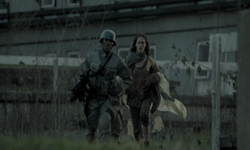
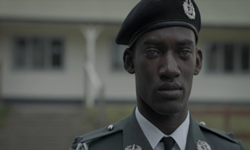
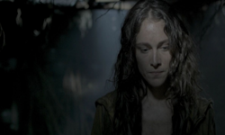

Man Against Fire
Temporada 3 Episodio 5 | Black Mirror



Dirección:
Jakob Verbruggen
Duración:
60 minutos
Guión:
Charlie Brooker
Banda Sonora:
Geoff Barrow
Trama:
Una organización militar sin nombre es la encargada de realizar la exterminación de toda ente calificada como "cucarachas". Stripe es el personaje principal y quién pasa diversos cambios sobre la idea que tenía de la aniquilación de los mutantes.
Crítica:
En principio conocemos a Stripe, un soldado en entrenamiento que está por salir en su primera misión; él pretende cumplir con su función, acatar órdenes y sobrellevar la situación para poder volver a casa, sin embargo, en el transcurso del capítulo se topa con verdades que hacen tambalear su concepción del mundo que lo rodea...